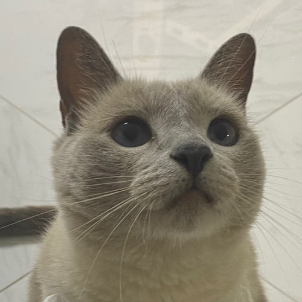
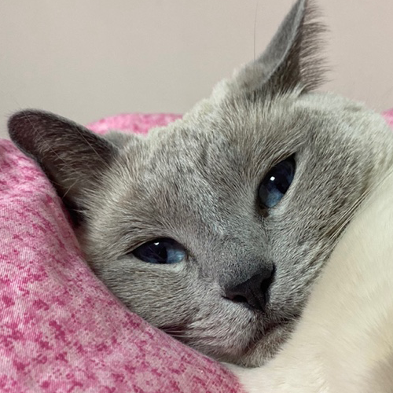
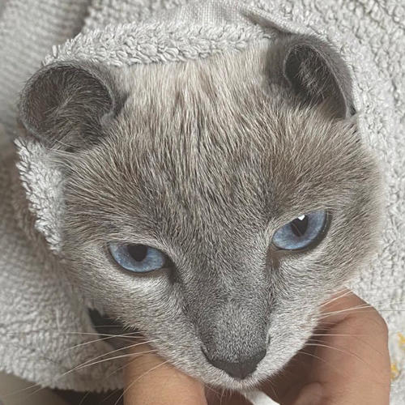

정효원
1993.04.13  
그림그리는 것을 좋아해 어릴때부터 꾸준히 그림을 그리며 대학에서는
애니메이션과를 전공하고 영상과 웹툰관련 일을 하며 지냈습니다.
코딩을 접한 것은 대학을 졸업하고 얼마 지나지 않아, 같은 영상 공부를
하는 친구의 제안으로 SNS를 통해 알게된 개발자에게 작은 과외를 받으면서
부터였습니다. 그림을 그리는 것과 마찬가지로 제가 글로 구성을 하면
화면으로
시각화되는 것을 보며 흥미와 재미를 느꼈습니다.
다니던 회사를 퇴사하고 나서 근 2년간 제가 무엇을 하면 좋을지,
고민과
취업준비를 하면서 그때 느꼈던 재미를 느끼며 일을 하고 싶다고
생각해 학원에
오게 되었습니다.